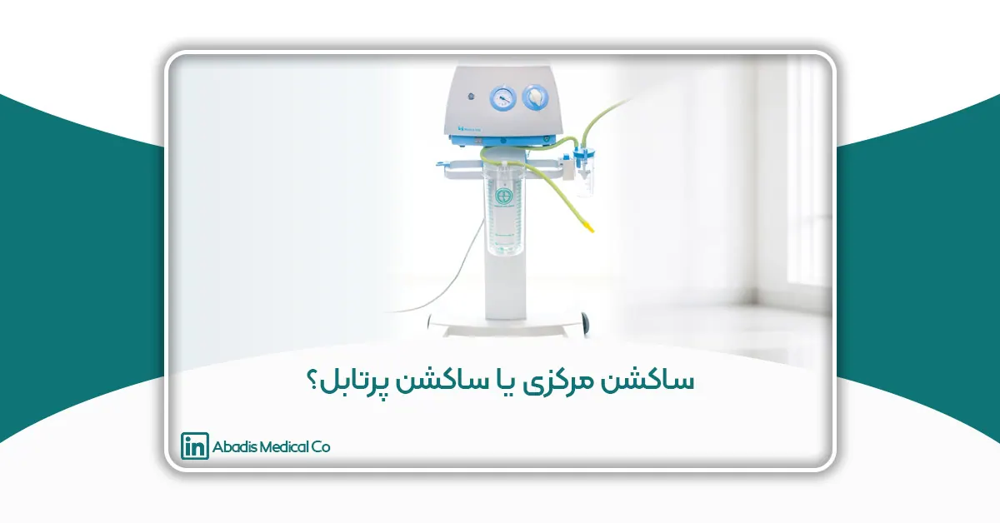
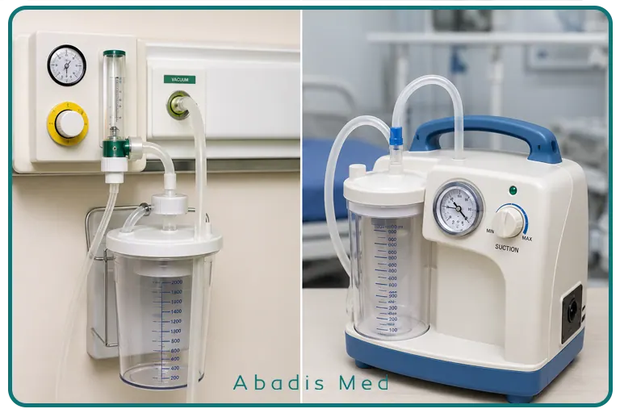

مقدمه
حفظ راه هوایی بیمار و تخلیه مؤثر ترشحات، خون و سایر مایعات بدن، یکی از اساسیترین اقدامات در مراقبتهای پزشکی به شمار میرود. در بسیاری از شرایط درمانی، از جمله جراحیها، مراقبت از بیماران بستری در بخشهای مراقبت ویژه (ICU)، اورژانس، بخشهای تنفسی، اتاق ریکاوری و حتی آمبولانسها، استفاده از تجهیزات ساکشن پزشکی نقش حیاتی در حفظ عملکرد تنفسی و افزایش ایمنی بیمار دارد.
سیستمهای ساکشن پزشکی با ایجاد فشار منفی کنترلشده، امکان خارج کردن ترشحات، خون، مایعات و سایر مواد ناخواسته را از راه هوایی، محل جراحی یا سایر حفرات بدن فراهم میکنند. عملکرد صحیح این تجهیزات میتواند از انسداد راه هوایی، آسپیراسیون، کاهش اکسیژنرسانی و بسیاری از عوارض جدی پیشگیری کند.
امروزه در مراکز درمانی دو نوع سیستم ساکشن بیش از سایر تجهیزات مورد استفاده قرار میگیرند: ساکشن مرکزی (Central Vacuum System) و ساکشن پرتابل (Portable Suction Unit). هر یک از این سیستمها بر اساس محل استفاده، زیرساختهای موجود، نوع خدمات درمانی و شرایط بیمار طراحی شدهاند و مزایا و محدودیتهای خاص خود را دارند.
در بیمارستانهای مجهز، شبکه وکیوم مرکزی امکان استفاده همزمان از ساکشن در بخشهای مختلف را فراهم میکند، در حالی که ساکشنهای پرتابل به دلیل قابلیت حمل، انتخابی مناسب برای آمبولانسها، کلینیکها، مراکز درمانی کوچک و مراقبتهای خانگی هستند.
علاوه بر عملکرد مکش، موضوع کنترل عفونت نیز امروزه به یکی از مهمترین معیارهای انتخاب سیستمهای ساکشن تبدیل شده است. استفاده از مخازن استاندارد، رگولاتورهای دقیق، فیلترهای محافظ و بهویژه کیسههای ساکشن یکبارمصرف، نقش مهمی در کاهش انتقال عفونتهای بیمارستانی و افزایش ایمنی بیماران و کارکنان درمانی ایفا میکند.
در این مقاله، ضمن معرفی ساختار و عملکرد ساکشن مرکزی و ساکشن پرتابل، تفاوتها، مزایا، محدودیتها و کاربردهای هر یک را بررسی کرده و نقش آنها را در مراکز درمانی ایران، کنترل عفونت و انتخاب مناسبترین سیستم ساکشن مورد تحلیل قرار میدهیم.
ساکشن پزشکی چیست؟
ساکشن پزشکی (Medical Suction) به مجموعه تجهیزاتی گفته میشود که با استفاده از فشار منفی کنترلشده، مایعات، خون، ترشحات، مخاط، بزاق یا سایر مواد ناخواسته را از بدن بیمار خارج میکنند. ایجاد این فشار منفی باعث میشود مسیر تنفس بیمار باز بماند، میدان دید جراح حفظ شود و خطر تجمع ترشحات در راه هوایی کاهش یابد.
ساکشن یکی از تجهیزات پایه در تمامی مراکز درمانی محسوب میشود و تقریباً در تمام بیمارستانها، مراکز جراحی، درمانگاهها و آمبولانسها مورد استفاده قرار میگیرد.
کاربردهای اصلی سیستم ساکشن عبارتاند از:
- حفظ باز بودن راه هوایی بیمار
- تخلیه ترشحات ریوی
- خارج کردن خون و مایعات در حین جراحی
- جلوگیری از آسپیراسیون
- کمک به بیماران تحت تهویه مکانیکی
- جمعآوری مایعات بدن برای نمونهگیری یا دفع ایمن
- افزایش کیفیت مراقبت در بخشهای مراقبت ویژه
بر اساس منبع تولید فشار منفی، سیستمهای ساکشن به دو گروه اصلی تقسیم میشوند:
- ساکشن مرکزی (Central Vacuum System)
- ساکشن پرتابل (Portable Suction Unit)
هر یک از این سیستمها متناسب با شرایط درمانی خاصی طراحی شدهاند و انتخاب صحیح آنها میتواند بر کیفیت درمان، ایمنی بیمار و کارایی کادر درمان تأثیر مستقیم داشته باشد.
ساکشن مرکزی چیست؟
ساکشن مرکزی یا Central Vacuum System سیستمی است که فشار منفی مورد نیاز تجهیزات ساکشن را از طریق یک شبکه وکیوم مرکزی در سراسر بیمارستان تأمین میکند. در این سیستم، خلأ توسط پمپهای وکیوم نصبشده در موتورخانه یا اتاق تأسیسات تولید شده و از طریق لولهکشی استاندارد به تمامی بخشهای درمانی منتقل میشود.
در کنار هر تخت بیمار، در اتاق عمل، بخش مراقبت ویژه، اورژانس، NICU، PICU و سایر بخشهای درمانی، خروجی وکیوم نصب میشود که رگولاتور ساکشن دیواری به آن متصل میشود. این رگولاتور وظیفه تنظیم دقیق فشار منفی را بر عهده دارد و امکان کنترل میزان مکش متناسب با شرایط بیمار را برای کادر درمان فراهم میکند.
یک سیستم کامل ساکشن مرکزی معمولاً از اجزای زیر تشکیل شده است:
- شبکه وکیوم مرکزی بیمارستان
- خروجی وکیوم (Vacuum Outlet)
- رگولاتور ساکشن دیواری
- گیج نمایشگر فشار
- فیلتر ایمنی
- مخزن یا جار ساکشن
- کیسه ساکشن یکبارمصرف (در صورت استفاده از سیستمهای بسته)
- شیلنگها و اتصالات
به دلیل تأمین فشار منفی از یک منبع مرکزی، عملکرد این سیستم بسیار پایدار، یکنواخت و قابل اعتماد است و برای استفاده مداوم در بیمارستانها گزینهای ایدهآل محسوب میشود.
مزایای ساکشن مرکزی
ساکشن مرکزی به دلیل طراحی مهندسیشده و اتصال به شبکه وکیوم بیمارستان، مزایای متعددی نسبت به سایر سیستمهای مکش دارد و به همین دلیل در اکثر بیمارستانهای مدرن به عنوان سیستم اصلی ساکشن مورد استفاده قرار میگیرد.
عملکرد پایدار و یکنواخت
از آنجا که فشار منفی توسط پمپهای مرکزی تأمین میشود، نوسانات مکش بسیار کمتر بوده و عملکرد سیستم در طول شبانهروز ثابت باقی میماند.
مناسب برای استفاده مداوم
برخلاف دستگاههای پرتابل که دارای موتور مستقل هستند، ساکشن مرکزی برای استفاده مداوم در بخشهای پرتردد مانند اتاق عمل، ICU و اورژانس طراحی شده است.
صدای کمتر
از آنجا که موتور و پمپ در موتورخانه بیمارستان قرار دارند، تجهیزات نصبشده کنار تخت بیمار تقریباً بدون صدا کار میکنند و آرامش بیشتری برای بیماران و کادر درمان فراهم میشود.
هزینه نگهداری پایینتر
با حذف موتورهای متعدد در بخشهای مختلف، هزینه تعمیر و نگهداری تجهیزات کاهش یافته و مدیریت سیستم سادهتر خواهد بود.
تنظیم دقیق فشار منفی
رگولاتورهای ساکشن دیواری امکان تنظیم دقیق فشار را متناسب با گروههای مختلف بیماران، از جمله بزرگسالان، کودکان و نوزادان، فراهم میکنند.
سازگاری با تجهیزات کنترل عفونت
ساکشن مرکزی بهراحتی با مخازن استاندارد، فیلترهای هیدروفوبیک و کیسههای ساکشن یکبارمصرف قابل استفاده است و نقش مهمی در کاهش خطر انتقال عفونتهای بیمارستانی ایفا میکند.
محدودیتهای ساکشن مرکزی
با وجود مزایای فراوان، ساکشن مرکزی محدودیتهایی نیز دارد که باید در زمان طراحی و بهرهبرداری از مراکز درمانی مورد توجه قرار گیرد.
- نیازمند وجود شبکه وکیوم مرکزی بیمارستان است.
- نصب اولیه آن به زیرساختهای تخصصی و هزینه سرمایهگذاری نیاز دارد.
- قابلیت حمل ندارد و استفاده از آن به محل نصب محدود است.
- در صورت بروز اختلال در سیستم مرکزی، عملکرد تمامی خروجیهای وکیوم تحت تأثیر قرار میگیرد؛ به همین دلیل بیمارستانها معمولاً از پمپهای رزرو و سامانههای پشتیبان استفاده میکنند.
با وجود این محدودیتها، ساکشن مرکزی همچنان استاندارد طلایی برای بیمارستانهای عمومی، تخصصی و فوقتخصصی به شمار میرود و در اغلب مراکز درمانی پیشرفته جهان مورد استفاده قرار میگیرد.
ساکشن پرتابل چیست؟
ساکشن پرتابل (Portable Suction Unit) دستگاهی مستقل برای ایجاد فشار منفی است که بدون نیاز به سیستم وکیوم مرکزی، امکان تخلیه ترشحات، خون و سایر مایعات بدن را فراهم میکند. برخلاف ساکشن مرکزی که به شبکه وکیوم بیمارستان متصل است، این دستگاه دارای پمپ مکش داخلی بوده و انرژی مورد نیاز خود را از برق شهری، باتری قابل شارژ یا در برخی مدلها از برق خودرو تأمین میکند.
به دلیل قابلیت حمل، ساکشن پرتابل در محیطهایی استفاده میشود که دسترسی به سیستم وکیوم مرکزی وجود ندارد یا جابهجایی دستگاه ضروری است. این ویژگی باعث شده است که ساکشن پرتابل یکی از تجهیزات ضروری در آمبولانسها، مراکز درمانی کوچک، درمانگاهها، مطبها و خدمات درمانی در منزل باشد.
عملکرد این دستگاه بر پایه ایجاد فشار منفی کنترلشده است. ترشحات بیمار از طریق شیلنگ ساکشن وارد مخزن جمعآوری شده و در بسیاری از مدلهای جدید، امکان استفاده از کیسههای ساکشن یکبارمصرف نیز وجود دارد که به افزایش ایمنی و کاهش خطر انتقال عفونت کمک میکند.
اجزای اصلی ساکشن پرتابل
اگرچه طراحی دستگاههای مختلف ممکن است تفاوتهایی داشته باشد، اما بیشتر ساکشنهای پرتابل از اجزای زیر تشکیل شدهاند:
- پمپ وکیوم الکتریکی
- موتور داخلی
- باتری قابل شارژ (در مدلهای باتریدار)
- رگولاتور تنظیم فشار
- گیج نمایشگر فشار منفی
- مخزن یا جار جمعآوری ترشحات
- فیلتر هیدروفوبیک و آنتیباکتریال
- شیلنگها و کانکتورهای اتصال
- کابل برق یا شارژر
وجود این اجزا باعث میشود دستگاه بتواند در شرایط مختلف، حتی خارج از محیط بیمارستان، عملکرد مناسبی داشته باشد.
مزایای ساکشن پرتابل
قابلیت حمل و جابهجایی آسان
مهمترین مزیت ساکشن پرتابل، امکان استفاده در هر مکان است. این دستگاه را میتوان بهراحتی بین بخشهای مختلف درمانی جابهجا کرد یا در آمبولانس و خدمات درمانی خارج از بیمارستان به کار گرفت.
استقلال از شبکه وکیوم مرکزی
در مراکزی که سیستم وکیوم مرکزی وجود ندارد، ساکشن پرتابل بهترین گزینه برای انجام اقدامات درمانی محسوب میشود.
مناسب برای انتقال بیمار
در هنگام انتقال بیماران بین بخشهای بیمارستان یا انتقال توسط آمبولانس، دسترسی مداوم به سیستم ساکشن اهمیت زیادی دارد. ساکشن پرتابل این امکان را فراهم میکند که در طول مسیر نیز راه هوایی بیمار حفظ شود.
مناسب برای مراقبت در منزل
برخی بیماران دارای تراکئوستومی، بیماریهای عصبی-عضلانی یا وابسته به ونتیلاتور، نیاز به ساکشن مکرر دارند. در این شرایط، ساکشن پرتابل یکی از تجهیزات ضروری مراقبت در منزل محسوب میشود.
راهاندازی سریع
عدم نیاز به نصب یا اتصال به شبکه وکیوم باعث میشود دستگاه در مدت کوتاهی آماده استفاده باشد.
محدودیتهای ساکشن پرتابل
با وجود مزایای متعدد، ساکشن پرتابل برای همه شرایط درمانی مناسب نیست و محدودیتهایی نیز دارد.
وابستگی به منبع انرژی
عملکرد دستگاه به برق یا باتری وابسته است و در صورت تخلیه باتری یا قطع برق، ممکن است نیاز به شارژ یا منبع تغذیه جایگزین وجود داشته باشد.
ظرفیت محدود مخزن
مخازن ساکشن پرتابل معمولاً حجم کمتری نسبت به سیستمهای بیمارستانی دارند و در جراحیهای طولانی یا بیمارانی با حجم بالای ترشحات، نیاز به تخلیه مکرر خواهند داشت.
محدودیت در استفاده مداوم
اگرچه بسیاری از مدلهای جدید عملکرد مناسبی دارند، اما برای استفاده مداوم و شبانهروزی در بخشهایی مانند ICU یا اتاق عمل، ساکشن مرکزی همچنان گزینه مناسبتری است.
نیاز به سرویس دورهای
وجود موتور، پمپ و باتری باعث میشود ساکشنهای پرتابل به سرویس، نگهداری و تعویض قطعات بیشتری نسبت به سیستمهای مرکزی نیاز داشته باشند.
مقایسه ساکشن مرکزی و ساکشن پرتابل
اگرچه هر دو سیستم وظیفه ایجاد فشار منفی و تخلیه ترشحات را بر عهده دارند، اما تفاوتهای قابلتوجهی از نظر عملکرد، کاربرد و زیرساخت موردنیاز دارند.
| ویژگی | ساکشن مرکزی | ساکشن پرتابل |
|---|---|---|
| منبع تولید خلأ | شبکه وکیوم مرکزی بیمارستان | موتور و پمپ داخلی |
| نیاز به برق هنگام استفاده | خیر (فشار از سیستم مرکزی تأمین میشود) | بله |
| قابلیت حمل | ندارد | دارد |
| مناسب برای ICU و اتاق عمل | بسیار مناسب | محدود |
| مناسب برای آمبولانس | خیر | بله |
| مناسب برای مراقبت در منزل | خیر | بله |
| پایداری فشار مکش | بسیار بالا | وابسته به عملکرد موتور |
| صدای عملکرد | بسیار کم | بیشتر از سیستم مرکزی |
| هزینه نصب اولیه | بالا (نیازمند زیرساخت) | پایینتر |
| هزینه نگهداری | پایین | متوسط |
| استفاده مداوم 24 ساعته | بله | محدود |
ساکشن مرکزی و ساکشن پرتابل در مراکز درمانی ایران
در ایران، انتخاب نوع سیستم ساکشن به نوع مرکز درمانی، امکانات زیرساختی و سطح خدمات بستگی دارد.
بیمارستانهای دولتی، خصوصی، آموزشی و فوقتخصصی معمولاً به شبکه وکیوم مرکزی مجهز هستند و در بخشهایی مانند اتاق عمل، ICU، CCU، NICU، PICU، اورژانس و بخشهای بستری از ساکشن دیواری متصل به سیستم وکیوم مرکزی استفاده میکنند. این سیستمها به دلیل عملکرد پایدار، امکان استفاده مداوم و هزینه نگهداری مناسب، استاندارد رایج در بیمارستانهای بزرگ کشور محسوب میشوند.
در مقابل، ساکشنهای پرتابل بیشتر در آمبولانسها، مراکز درمانی سرپایی، کلینیکها، درمانگاهها، مطبهای تخصصی، مراکز جراحی محدود و خدمات درمانی در منزل کاربرد دارند. همچنین در بسیاری از بیمارستانها، از ساکشن پرتابل بهعنوان تجهیزات پشتیبان برای مواقع اضطراری یا انتقال بیماران استفاده میشود.
طی سالهای اخیر، با افزایش توجه به کنترل عفونت و ایمنی بیمار، بسیاری از مراکز درمانی ایران استفاده از مخازن استاندارد، فیلترهای ایمنی و کیسههای ساکشن یکبارمصرف را در هر دو نوع سیستم ساکشن گسترش دادهاند. این رویکرد علاوه بر کاهش تماس مستقیم کارکنان با ترشحات آلوده، به بهبود مدیریت پسماندهای عفونی و افزایش سطح ایمنی زیستی مراکز درمانی کمک میکند.
در نتیجه، انتخاب میان ساکشن مرکزی و ساکشن پرتابل در ایران معمولاً به جایگزینی یکی با دیگری منجر نمیشود؛ بلکه این دو سیستم در کنار یکدیگر و متناسب با نیاز هر بخش درمانی مورد استفاده قرار میگیرند و نقش مکمل در ارائه خدمات درمانی ایفا میکنند.

نقش ساکشن دیواری در سیستم وکیوم مرکزی
در بیمارستانهایی که به شبکه وکیوم مرکزی مجهز هستند، ساکشن دیواری (Wall Suction Regulator) رابط اصلی بین سیستم وکیوم مرکزی و بیمار محسوب میشود. این تجهیز به خروجی وکیوم نصبشده در کنار تخت بیمار یا اتاق عمل متصل شده و امکان کنترل دقیق فشار منفی را برای کادر درمان فراهم میکند.
برخلاف تصور رایج، سیستم وکیوم مرکزی بهتنهایی قابلیت استفاده مستقیم ندارد؛ زیرا فشار منفی تولیدشده باید متناسب با شرایط بیمار تنظیم شود. این وظیفه بر عهده رگولاتور ساکشن دیواری است که با تنظیم میزان مکش، ایمنی بیمار را در طول فرآیند ساکشن تضمین میکند.
یک ساکشن دیواری استاندارد معمولاً از اجزای زیر تشکیل شده است:
- رگولاتور تنظیم فشار منفی
- گیج نمایشگر فشار (mmHg و Bar)
- فیلتر محافظ برای جلوگیری از ورود مایعات به سیستم وکیوم
- مخزن جمعآوری ترشحات
- شیلنگها و اتصالات استاندارد
- پایه یا براکت نصب روی کنسول یا دیوار
تنظیم صحیح فشار منفی اهمیت ویژهای دارد؛ زیرا فشار بیش از حد میتواند باعث آسیب به مخاط راه هوایی، خونریزی یا تحریک بافتهای حساس شود، در حالی که فشار ناکافی نیز تخلیه مؤثر ترشحات را با مشکل مواجه میکند. به همین دلیل، استفاده از رگولاتورهای دقیق و کالیبرهشده یکی از الزامات ایمنی در مراکز درمانی است.
در برخی بخشهای تخصصی مانند NICU و PICU، استفاده از ساکشن دیواری ویژه اطفال اهمیت بیشتری پیدا میکند. این تجهیزات با محدوده فشار مناسب برای نوزادان و کودکان طراحی شدهاند و امکان تنظیم دقیقتر فشار مکش را فراهم میکنند تا خطر آسیب به بافتهای ظریف راه هوایی به حداقل برسد.
اهمیت مخازن ساکشن در جمعآوری ایمن ترشحات
یکی از اجزای اصلی هر سیستم ساکشن، مخزن ساکشن (Suction Canister) است. این مخزن محل جمعآوری ترشحات، خون و سایر مایعات خارجشده از بدن بیمار بوده و نقش مهمی در عملکرد ایمن سیستم ساکشن دارد.
مخازن ساکشن باید از موادی ساخته شوند که علاوه بر استحکام مکانیکی، در برابر مواد ضدعفونیکننده، ضربه و فرآیندهای استریلسازی مقاوم باشند. به همین دلیل، در بسیاری از مراکز درمانی از مخازن ساختهشده از پلیکربنات شفاف استفاده میشود.
ویژگیهای یک مخزن ساکشن استاندارد عبارتاند از:
- مقاومت بالا در برابر ضربه و شکستگی
- قابلیت اتوکلاو و شستوشوی مکرر
- درجهبندی دقیق حجم مایعات
- اتصال ایمن به سیستم ساکشن
- سازگاری با کیسههای ساکشن یکبارمصرف
- سهولت نصب و تعویض
مخازن ساکشن معمولاً در حجمهای مختلف مانند ۱، ۲ و ۳ لیتر تولید میشوند تا پاسخگوی نیاز بخشهای مختلف درمانی باشند. انتخاب حجم مناسب به نوع مرکز درمانی، میزان ترشحات بیمار و مدتزمان استفاده از سیستم بستگی دارد.
نقش کیسه ساکشن یکبارمصرف در کنترل عفونت
یکی از مهمترین پیشرفتهای سالهای اخیر در حوزه تجهیزات ساکشن، توسعه کیسههای ساکشن یکبارمصرف (Disposable Suction Liner Bags) است. این فناوری، رویکرد مدیریت ترشحات عفونی را در بسیاری از بیمارستانهای جهان تغییر داده و به یکی از اجزای اصلی برنامههای کنترل عفونت تبدیل شده است.
در سیستمهای سنتی، پس از پر شدن مخزن، کارکنان درمانی ناچار به تخلیه، شستوشو و ضدعفونی آن بودند. این فرآیند علاوه بر زمانبر بودن، خطر تماس مستقیم با ترشحات آلوده، ایجاد آئروسلهای عفونی و آلودگی متقاطع را افزایش میداد.
در مقابل، در سیستمهای مجهز به کیسه ساکشن یکبارمصرف، ترشحات مستقیماً داخل یک کیسه استریل جمعآوری میشوند و پس از پایان استفاده، بدون نیاز به تخلیه، مطابق دستورالعملهای مدیریت پسماندهای عفونی دفع میشوند.
استفاده از این فناوری مزایای متعددی دارد:
- کاهش تماس مستقیم کارکنان با ترشحات عفونی
- کاهش خطر آلودگی متقاطع (Cross-contamination)
- کاهش انتشار آئروسلهای آلوده هنگام تعویض مخزن
- جلوگیری از ورود مایعات به سیستم وکیوم مرکزی
- کاهش زمان آمادهسازی تجهیزات بین دو بیمار
- کاهش مصرف آب و مواد ضدعفونیکننده
- کاهش تولید پسابهای آلوده بیمارستانی
- افزایش ایمنی زیستی مراکز درمانی
به همین دلیل، بسیاری از دستورالعملهای بینالمللی کنترل عفونت استفاده از تجهیزات یکبارمصرف و سیستمهای بسته جمعآوری ترشحات را، بهویژه در بخشهای پرخطر مانند ICU، اتاق عمل، اورژانس و بخشهای عفونی، توصیه میکنند.
چگونه بهترین سیستم ساکشن را برای یک مرکز درمانی انتخاب کنیم؟
انتخاب سیستم ساکشن مناسب تنها به قدرت مکش محدود نمیشود و باید بر اساس نیازهای بالینی، زیرساختهای موجود و الزامات کنترل عفونت انجام شود. هنگام انتخاب، توجه به موارد زیر ضروری است:
نوع مرکز درمانی
بیمارستانهای مجهز به شبکه وکیوم مرکزی معمولاً از ساکشن دیواری استفاده میکنند، در حالی که درمانگاهها، مراکز جراحی محدود یا خدمات درمانی در منزل بیشتر به ساکشن پرتابل نیاز دارند.
نوع بیماران
در بخشهای تخصصی مانند ICU، NICU و PICU، تجهیزات باید امکان تنظیم دقیق فشار منفی را متناسب با شرایط بیمار فراهم کنند.
ظرفیت و حجم ترشحات
در اتاقهای عمل یا بخشهایی با حجم بالای ترشحات، استفاده از مخازن بزرگتر و سیستمهای ساکشن با ظرفیت بالاتر توصیه میشود.
کنترل عفونت
سازگاری سیستم با کیسههای ساکشن یکبارمصرف، فیلترهای هیدروفوبیک و سایر تجهیزات ایمنی، نقش مهمی در کاهش خطر انتقال عفونت دارد.
کیفیت و دوام تجهیزات
رگولاتور دقیق، گیج خوانا، بدنه مقاوم در برابر خوردگی، اتصالات استاندارد و دسترسی به خدمات پس از فروش، از جمله معیارهای مهم در انتخاب تجهیزات ساکشن هستند.
جمعبندی
ساکشن پزشکی یکی از ارکان اصلی مراقبتهای درمانی است و انتخاب صحیح نوع سیستم ساکشن میتواند تأثیر مستقیمی بر ایمنی بیمار، کیفیت درمان و کارایی کارکنان درمانی داشته باشد.
ساکشن مرکزی به دلیل اتصال به شبکه وکیوم بیمارستان، عملکرد پایدار، قابلیت استفاده مداوم و هزینه نگهداری پایین، گزینه استاندارد برای بیمارستانهای مجهز محسوب میشود. در مقابل، ساکشن پرتابل با قابلیت حمل، استقلال از شبکه وکیوم و امکان استفاده در آمبولانسها، درمانگاهها و مراقبتهای خانگی، راهکاری مناسب برای محیطهایی است که دسترسی به وکیوم مرکزی وجود ندارد.
صرفنظر از نوع سیستم، استفاده از رگولاتورهای دقیق، مخازن استاندارد، فیلترهای ایمنی و کیسههای ساکشن یکبارمصرف نقش مهمی در کاهش خطر انتقال عفونت، حفاظت از کارکنان درمانی و بهبود مدیریت پسماندهای بیمارستانی دارد.
امروزه مراکز درمانی پیشرفته تنها به قدرت مکش توجه نمیکنند، بلکه عواملی مانند ایمنی زیستی، سهولت استفاده، دوام تجهیزات، قابلیت ضدعفونی، انطباق با استانداردهای بینالمللی و سازگاری با فناوریهای نوین کنترل عفونت را نیز در انتخاب سیستم ساکشن مدنظر قرار میدهند. سرمایهگذاری در تجهیزات ساکشن باکیفیت، در نهایت به ارتقای کیفیت خدمات درمانی، افزایش ایمنی بیماران و بهبود عملکرد مراکز درمانی منجر خواهد شد.
منابع
- World Health Organization (WHO). Medical Device Technical Series: Medical Vacuum Systems. Geneva: WHO.
- World Health Organization (WHO). Safe Management of Wastes from Health-Care Activities. 2nd Edition. Geneva: WHO; 2022.
- Centers for Disease Control and Prevention (CDC). Guidelines for Environmental Infection Control in Health-Care Facilities. Atlanta: CDC; 2023.
- Centers for Disease Control and Prevention (CDC). Guideline for Isolation Precautions: Preventing Transmission of Infectious Agents in Healthcare Settings.
- Occupational Safety and Health Administration (OSHA). Healthcare Worker Protection Against Occupational Exposure to Infectious Materials. Washington, DC.
- Association for the Advancement of Medical Instrumentation (AAMI). Medical Suction Equipment Standards and Recommendations.
- ISO 10079-1. Medical Suction Equipment – Electrically Powered Suction Equipment.
- ISO 7396-1. Medical Gas Pipeline Systems – Pipeline Systems for Compressed Medical Gases and Vacuum.
- HTM 02-01. Medical Gas Pipeline Systems. National Health Service (NHS), United Kingdom.
- National Health Service (NHS). Suction Equipment: Clinical Guidance and Safe Use Procedures.
- ECRI. Guidance on Medical Suction Equipment Safety and Maintenance.
- Association of periOperative Registered Nurses (AORN). Guidelines for Perioperative Practice – Surgical Suction and Fluid Management.
- Rutala WA, Weber DJ. Disinfection and Sterilization in Healthcare Facilities: Current Issues and New Technologies. American Journal of Infection Control. 2021.
- Weber DJ, Rutala WA. Environmental Infection Prevention and Control in Healthcare Facilities. Infection Control & Hospital Epidemiology.
- European Centre for Disease Prevention and Control (ECDC). Infection Prevention and Control in Healthcare Settings. Stockholm: ECDC.